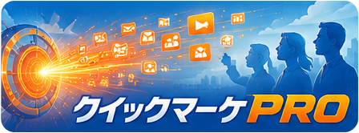

「何に使うか」が最初から明確
画面を開いてから用途を考えるのではなく、出品、集客、発信、記事制作という目的から始まります。次に何を入れ、何を確認すればよいかが見えるので、知識の量にかかわらず一歩目を踏み出せます。
A PERSONAL AI APPLICATION
何でもできる箱を前に、何をすればいいか悩み続けるのは、もう終わりにしませんか。目的が最初から決まっている。使うほど、あなたに寄り添う。SWAN WORKSがつくるのは、仕事と暮らしの具体的な場面で、今日から頼れるカスタムAIアプリケーションです。
BEFORE YOU BUY ANOTHER COURSE
「AIで月にこれだけ稼ぐ方法」「今だけ無料のLINEグループ」「限定ウェビナーの参加者だけに公開」。気になって登録すると、説明会があり、面談があり、最後に待っているのは高額なスクールや講座への案内。二十万円、三十万円なら将来への投資として安い。返金保証があるから安心。このスキルを身につければ年商一億円も目指せる。そんな強い言葉を前にして、カード番号を見ながら迷った経験はないでしょうか。
その場では、何かが変わりそうに感じます。周りの参加者も前向きで、講師の実績はまぶしく、置いていかれたくない気持ちにもなる。けれど、いったん深呼吸して考えてみてください。講座を受けたあと、あなたの明日の仕事は具体的にどう変わるのでしょう。何を作り、誰に届け、どんな一歩を終えられるのでしょう。
……ん？
よく考えてほしいのです。AIは、とてつもなく優秀な頭脳です。調べる、まとめる、書く、比べる、案を出す。人が長い時間をかけていた作業を、驚くほど短い時間に変えてくれます。でも、あなたが今日どんなことで困っているかを、黙っているだけで完全に理解してくれるわけではありません。あなたの胸の奥にある閃きや嘆き、悔しさや希望を、そのまま持っているわけでもありません。
料理にたとえるなら、包丁の使い方や調味料の名前、分量の目安を知ることと、目の前のお客さまを喜ばせる一皿を出せることは同じではありません。道具の知識を増やしても、誰に何を届けるのかが決まっていなければ、手は止まります。「AIを学んだ」という実感は得られても、売れる商品写真、今日投稿できる告知、読まれる記事という成果が手元に残るとは限りません。
そこで言葉に詰まるのは、あなたの意欲や才能が足りないからではありません。選択肢が広すぎるのです。何でもできると言われた瞬間、人は何から始めればいいかわからなくなる。仕事、発信、副業、販売、動画、文章。可能性が並ぶほど、最初の一歩はぼやけていきます。自由は魅力ですが、地図のない自由は、ときに重荷になります。
広告では「この言葉を入れれば全部自動」「あなたは何もしなくていい」と語られます。しかし、誰に向けて、何を大切にし、どこまでを今日終えるかは、最後まで利用者に残ります。便利な言い回しを受け取っても、自分の現場に合わなければ使い続けられません。うまくいかないたびに別の教材を探し、また新しい言葉を覚える。その遠回りに、時間とお金を使い続けていないでしょうか。
SWAN WORKSは、その遠回りを減らしたいと考えました。AIについて詳しくなることをゴールにせず、あなたが本当に終えたい仕事を先に決める。出品写真を整える。集客の発信をつくる。伝えたいことを記事にする。その目的に合わせて、最初から迷いにくい形にしたもの。それが、私たちのいう「専用機」です。
THE DIFFERENCE
専用機は、あなたに考えることをやめさせる道具ではありません。考えるべき場所を、あなたにしか決められない大切な部分へ戻すための相棒です。
画面を開いてから用途を考えるのではなく、出品、集客、発信、記事制作という目的から始まります。次に何を入れ、何を確認すればよいかが見えるので、知識の量にかかわらず一歩目を踏み出せます。
好みの言葉、避けたい表現、大切にしたい雰囲気。使う人が選び、伝えるほど、専用機はその人らしい仕事に寄り添います。毎回ゼロから説明する疲れを減らし、頼れる相棒として育てられます。
知識を受け取って終わりではなく、写真、投稿案、動画、記事など、次の行動に使える形を目指します。「わかった」だけでなく「できた」「出せた」まで進むことが、時間と価値を高めます。
最初に高額な受講料を払って後戻りしにくくするのではなく、月額料金や使った量に応じた費用で試せる形を大切にします。合わなければ利用を止める。その選択肢があることも安心の一部です。
専門的な言葉を覚えることより、画面を見て意味がわかること。説明を読んで手が動くこと。迷ったときに戻る場所があること。小学生にも筋道が伝わるくらい、目的と操作を明快にします。
AIがあなたに代わって人生の目的を決めることはありません。あなたの経験、商売への思い、お客さまへの親切心が中心です。専用機はそれを早く、わかりやすく、届けやすい形にするために働きます。
SWAN WORKS LINEUP
全部を覚える必要はありません。今いちばん時間がかかっている仕事、後回しにしている発信、届けたい相手から選んでください。
「売りたいものはある。でも、写真を整えるところで止まる」。そんな出品者のための専用機です。商品をスマホで撮影し、販売ページで目に留まる写真づくりを助けます。背景や見せ方に自信がない、撮影場所を毎回用意できない、画像編集ソフトは難しい。そうした負担を小さくし、出品までの時間を短くします。
フリマアプリに一品だけ出したい人から、日々たくさんの商品を扱う人まで、価値は同じです。写真づくりに費やしていた時間を、説明文、お客さま対応、仕入れ、発送といった大事な仕事へ戻せます。「写真が苦手だから売るのを諦める」を減らし、手元にある価値を世の中へ送り出すための相棒です。
パシャっと出品を見る
良い商品やサービスがあるのに、伝える作業が続かない。投稿の話題が決まらない。文章を書いて、画像を用意して、動画まで考えると一日が終わる。クイマは、集客とマーケティングに向き合う人のための専用機です。SNS投稿、紹介文、企画のたたき台、PR動画づくりまで、発信の流れをひとつの場所で支えます。
特に力を発揮するのが、リールやYouTube向けの動画です。動画に挑戦したいけれど、構成や見せ方に迷って止まっていた人も、自分の商品を主役にした発信へ進めます。派手な言葉だけを並べるのではなく、誰にどんな良さを届けるかを見失わない。あなたの商売の温度を残したまま、届ける回数と選択肢を増やします。
クイマを見る頭の中には伝えたいことがあるのに、白い画面を前にすると言葉が出ない。書き始めても長くなり、結局公開できない。ソラモトは、経験や思いを、読まれる記事へ育てたい人のための専用機です。テーマを考え、読み手を意識し、一本の記事として整えて公開へ進む。その重たい道のりを、隣で一緒に歩きます。
文章が得意な人だけの道具ではありません。現場で知っていること、お客さまからよく聞かれること、失敗から学んだこと。それらは、あなたにしか書けない材料です。ソラモトは、その材料を置き去りにせず、伝わる順番をつくる手助けをします。記事、コラム、継続的な情報発信を「いつか」から「今日」に変えます。
ソラモトを見る
競馬の情報は膨大です。数字、過去の走り、当日の状況、さまざまな見方があり、楽しみ方も人それぞれ。未来競馬は、その情報と向き合う時間をもっと見通しよくし、自分なりの予想を楽しむための専用機として開発を進めています。正解を約束するものではなく、考える楽しさを支える相棒を目指しています。
SWAN WORKSは、いまある三つだけで終わりません。「目的が明確なら、AIはもっと身近な力になる」という考えを、さまざまな分野へ広げていきます。暮らしや仕事のなかで、難しい、面倒、時間が足りないと感じる場所。その一つひとつに、気持ちよく使える専用機を届けます。
未来競馬の紹介を見るCOURSE OR APPLICATION?
スクールがすべて悪いわけではありません。学ぶこと自体が目的なら、体系的な講座は役立ちます。ただ、あなたが欲しいのが明日の成果なら、選ぶ基準は変わります。
| 考えるポイント | 一般的な高額講座で起きやすいこと | SWAN WORKSの専用機 |
|---|---|---|
| 始める目的 | 広くAIを学んでから用途を決める | 出品・集客・記事など用途から選ぶ |
| 最初の負担 | まとまった受講料を先に決断する | 利用しながら自分との相性を確かめる |
| 必要な知識 | 多くの用語や使い方を順番に覚える | 必要な場面で必要な入力をすればよい |
| 手元に残るもの | 知識、教材、受講した経験 | 公開や販売に使える写真・投稿・記事 |
| 合わないとき | 支払い済みのためやめにくい | 利用を止めるという選択ができる |
| 成長の方向 | 受講者が道具に合わせて覚える | 使いながら自分好みの相棒に育てる |
大切なのは、金額の大小だけではありません。支払ったあと、あなたの時間がどちらへ向かうかです。教材を消化するために夜を使うのか、実際の商品を一つ出品するのか。課題として架空の投稿を作るのか、明日のお客さまに届く投稿を作るのか。学習の満足感と、仕事が進む手応えは、似ているようで違います。
高いお金を払えば本気になれる、という考え方もあります。けれど、本気になるために不安を抱える必要はありません。大きな支払いをしたから途中でやめられない、成果が出ていなくても元を取りたいから続ける。その状態では、道具を使うはずが、支払いに自分が縛られてしまいます。
月額料金と利用量に応じた費用なら、価値を感じる分だけ使えます。忙しい月、たくさん作りたい月、少し休みたい時期。生活や商売には波があります。専用機も、利用する人の現実に寄り添える形であるべきです。料金や提供条件は各サービスの案内で確認していただきますが、最初から大きな負担を背負わせないことは、SWAN WORKSが大切にする姿勢です。
もちろん、使えば誰もが必ず稼げるとは言いません。道具だけで商売の結果が決まることもありません。お客さまを思う気持ち、商品を磨く努力、発信を続ける意志は、あなたのものです。だからこそ私たちは、誇張した成功を売るのではなく、その努力が成果物になるまでの面倒を減らします。
試してみてください。合わなければ、利用を止めればいい。その選択ができるから、最初の一歩を必要以上に怖がらなくていい。最初から完璧に使おうとせず、一つの写真、一つの投稿、一本の記事から始めてください。小さくても、手元に成果が残る一歩は、講義を聞いただけの一日より明日につながります。
YOUR FIRST WEEK
特別な準備は要りません。できるところから触れ、あなたの基準を伝え、日常の中に置いてください。
商品写真が整わず出品できない。毎日のSNS投稿が負担。記事の下書きが止まっている。まずは「今週これが一つ終われば楽になる」という仕事を選びます。壮大な目標を立てるより、目の前の詰まりを一つほどくことから始めます。
出品ならパシャっと出品、集客や動画ならクイマ、記事ならソラモト。何でもできる画面から機能を探す必要はありません。入口の時点で行き先が決まっているから、次の操作へ進めます。
商品の写真、伝えたい魅力、読み手に話したい経験。きれいに整理されていなくても構いません。専用機は、あなたが持っている材料を仕事に使える形へ近づけます。材料が足りなければ、何を加えるとよいかも見つけやすくなります。
最初の答えをそのまま受け取る必要はありません。もっと落ち着いた言葉にしたい、写真は明るすぎない方がいい、結論を先に伝えたい。あなたの感覚を選択として返すほど、相棒との距離が近づきます。
下書きを増やすだけではなく、一つ公開する。商品を出品する。投稿を予約する。記事を読める状態にする。完璧を待たず、届く場所まで運ぶことで初めて反応が生まれます。その反応が、次に良くするための材料になります。
専用機の本当の価値は、作業が速くなることだけではありません。空いた時間でお客さまと話す、商品を磨く、家族と食事をする、次のアイデアを考える。あなたにしか使えない時間が戻ることにあります。
WHO IT IS FOR
SWAN WORKSが専用機を届けたいのは、AIの最新情報を毎日追いかけられる人だけではありません。むしろ、目の前の仕事に追われて調べる時間がない人、専門用語を見ると自分には難しいと感じる人、一度試したけれど思うような答えが出ずに閉じてしまった人です。
小さなお店を一人で切り盛りしている。仕入れも接客も経理も発信も自分でやる。良い品を選ぶ目には自信があるのに、写真や文章で損をしている気がする。そんな人が、専門家を何人も雇わなくても、自分の良さをきちんと届けられるようにしたいのです。
会社で広報やマーケティングを任されたけれど、専任ではない。通常業務の合間に投稿を考え、上司の確認を取り、締切に追われる。アイデアがないのではなく、形にする時間が足りない。そんな人が、伝えたい軸を守りながら発信を続けられるようにしたいのです。
経験や知識はあるけれど、文章を書くことに苦手意識がある。話せば伝わるのに、書くと固くなる。途中で何を言いたかったかわからなくなる。そんな人の中にある言葉を、読み手へ渡せる記事にしたいのです。うまい文章に見せることより、その人にしか語れない実感を消さないことを大切にします。
副業を考えている人にも、最初から大きな約束はしません。「これだけで誰でも稼げる」とは言えないからです。ただ、出品する、発信する、記事を公開するという具体的な行動は、可能性を現実へ近づけます。何もしないまま情報だけを集め続ける状態から、自分の仕事を一つ外へ出す状態へ。その移動を専用機が助けます。
すでにAIを使いこなしている人にも価値があります。毎回目的に合わせて細かな指示を組み立てる時間、複数のサービスを行き来する手間、過去の好みを伝え直す疲れ。専用機は、得意な人の速さをさらに仕事へ集中させます。初心者向けだから浅いのではなく、目的が絞られているから迷いが少ないのです。
そして何より、失敗しても自分を責めないでください。一度で思いどおりにならないのは、あなたに才能がない証拠ではありません。「ここが違う」と気づけるのは、あなたの中に基準がある証拠です。その基準こそ、専用機をあなたらしい相棒に育てる大切な材料です。
NOT A SHORTCUT, BUT A CLEAR WAY
ここまで読んで、「結局、新しい道具を売りたいだけでは」と感じた方もいるかもしれません。その慎重さを、私たちは歓迎します。強い言葉で急がせ、大きな期待を持たせ、考える時間を奪う売り方に疲れてきたからこそ、このページへたどり着いたはずです。すぐに決めなくて構いません。リンク先を見て、自分の仕事に本当に必要かを確かめてください。
専用機は、押すだけで人生が変わる魔法のボタンではありません。写真にする商品も、発信するサービスも、記事に込める経験も、最初はあなたの手元にあります。お客さまに向き合うことや、約束を守ること、より良い商品を考えることまで任せきることもできません。それらは面倒だから残るのではなく、あなたの商売の信頼そのものだから残ります。
では、何が変わるのでしょう。頭の中の材料を形にするまでの距離が短くなります。写真編集を覚える前に出品写真を用意する。毎回投稿の型から悩まず、今日伝える内容を考える。文章の組み立てに何日も止まらず、経験を読める下書きへ進める。あなたにしか決められない部分へ、時間と気力を残せるようになります。
一回で完璧な成果が出なかったとしても、無駄ではありません。出てきたものを見れば、「自分はここを大切にしたい」「この言葉はお客さまに合わない」と具体的に気づけます。何もない画面を見つめていたときには言葉にできなかった好みが、目の前の案と比べることで見えてきます。その発見を伝え、次の成果へつなげることが、相棒を育てるということです。
成功している誰かの答えを借り続けるより、自分のお客さまから返ってきた小さな反応を大切にしてください。写真を変えたら見てもらえた。投稿から問い合わせが一つ来た。記事を読んだ人が「自分のことのようだった」と言ってくれた。その事実は、華やかな売上報告よりも、あなたの次の一歩を正確に教えてくれます。
専用機を使う日は、特別な挑戦の日でなくていいのです。店を開ける前の二十分、移動中のスマホ、子どもが眠ったあとの短い時間。いままで「まとまった時間ができたら」と先送りしていた仕事を、小さな時間で前へ進める。生活を仕事に合わせて壊すのではなく、生活の中に道具が収まることを目指します。
そして、使わないという判断も尊重します。今は商品を磨く時期かもしれない。発信より、お客さまと直接話す方が合っているかもしれない。自分で書く時間そのものが好きな人もいます。必要のない道具を持つことは、豊かさではありません。いまの課題と専用機の目的が重なったときに、選んでください。
私たちが約束したいのは、誰でも簡単に成功できる未来ではありません。目的をぼやかしたまま不安を売らないこと。難しさで優位に立たないこと。使う人が判断できる言葉で伝えること。成果を確認しながら、小さく始められる入口をつくること。その誠実さを、各プロダクトの体験にもつないでいきます。
一つの作業が早く終われば、次はお客さまの声を聞けます。一つの発信を公開できれば、次は反応を見て考えられます。専用機が生みたいのは、単なる速さではなく、止まっていた仕事が動き出す余白です。その余白を、あなたらしい価値に変えてください。
QUESTIONS & ANSWERS
はい。専用機は、AIそのものを勉強することではなく、出品や発信などの目的から始めます。まず各サービスの案内を見て、自分が終えたい仕事に近いものを選んでください。操作で迷う箇所があれば、提供中の案内やお問い合わせ導線から確認できます。
講座は知識や使い方を学ぶことが中心です。専用機は、具体的な仕事の成果物をつくるために使うアプリケーションです。学ぶことを否定するものではありませんが、目的がすでに決まっているなら、仕事をしながら必要なことを覚える方が合う場合があります。
必ず売上が上がるという保証はできません。価格、商品、需要、届け方など、結果には多くの要素が関わります。専用機が助けるのは、写真や発信、記事制作の負担を減らし、試せる回数や改善に使える時間を増やすことです。
公開前には必ずご自身で内容を確認してください。事実、価格、固有名詞、権利に関わる素材、業界ごとの表示ルールなど、人の確認が必要な部分があります。専用機は判断の責任を奪うものではなく、判断しやすい形をつくる相棒です。
むしろ、あなたの好みや経験を伝えることが大切です。出てきた案に対して、好き、違う、もっとこうしたい、と選んでください。何を残し何を変えるかを決めるのはあなたです。専用機は、その選択を仕事の形へ反映しやすくします。
各サービスの最新料金と条件を、リンク先で必ずご確認ください。SWAN WORKSは、最初に大きな受講料を払わせる形ではなく、月額料金や利用量に応じた費用で試しやすい提供を目指しています。不要になったときの手続きも、各サービスの案内をご確認ください。
今週もっとも終えたい仕事で選んでください。商品を売りたいのに写真で止まるならパシャっと出品。集客の投稿やPR動画を作りたいならクイマ。経験を記事として届けたいならソラモトです。複数を同時に始めるより、一つの成果を出してから広げる方法もおすすめです。
未来競馬は開発中のプロダクトです。このページでは、SWAN WORKSが専用機という考え方を今後もさまざまな分野へ広げていく例として紹介しています。提供状況は未来競馬の紹介ページでご確認ください。
OUR PROMISE
新しい技術は、詳しい人だけのものになりがちです。毎日情報を追い、難しい設定を楽しみ、試行錯誤に時間を使える人から恩恵を受ける。でも、本当に時間を必要としているのは、現場で忙しく働く人かもしれません。伝え方が苦手なだけで、良い商品を持つ人かもしれません。
私たちは、難しさそのものを価値として見せたくありません。画面の裏側がどれほど高度かではなく、使う人が「これならできる」と感じるか。昨日より早く終わったか。諦めていた発信を一つ公開できたか。その実感で道具の価値を測ります。
専用機という名前には、万能さを競わない決意があります。一つの目的に向き合い、その目的の中で頼れる存在になる。大きな機能一覧より、迷わない一つの導線。難しい説明より、使ったあとに残る一つの成果。私たちは、その積み重ねを選びます。
AIには感情がありません。しかし、道具をつくる私たちと、使うあなたには感情があります。売れたときの喜び、伝わらない悔しさ、時間が足りない焦り、もう一度挑戦したい希望。そうした人間の側の気持ちを置き去りにせず、親切な形に整えることがSWAN WORKSの役目です。
完璧な未来を約束するのではなく、今日の一歩を軽くする。誰かの成功例をそのままなぞらせるのではなく、あなた自身の仕事を進める。大きな金額で覚悟を試すのではなく、使って価値を確かめてもらう。これが、私たちが専用機に込めた姿勢です。
もし今、AIを学ばなければ取り残されると焦っているなら、いったん立ち止まってください。追いかけるべきなのは、新しい言葉の数ではありません。あなたが助けたいお客さま、届けたい商品、語りたい経験です。それらは、流行が変わっても消えません。専用機は、その変わらない価値を、今の時代に届く形へするためにあります。
まず一つ選び、一つ作り、一つ届ける。そこで生まれた手応えを、次の一歩へつなげる。AIを遠い未来の話から、今日使える道具へ。あなたの時間を、あなたにしかできないことへ。SWAN WORKSは、詳しくない人の隣から、その変化をつくっていきます。